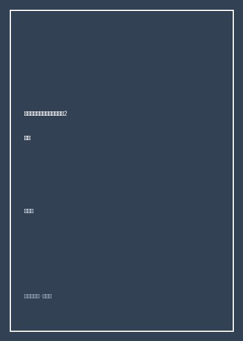

电子电气工程师必知必会

总体观点
达伦·阿什比的《电子电气工程师必知必会》（Electrical Engineering 101）是硬件开发与嵌入式工程领域难得一见的祛魅之作。作者作为资深一线硬件老兵，敏锐指出：传统工科院校教学往往深陷微积分和复数矩阵的数学泥潭，却未能教会学生最基本的工程直觉——电究竟如何在导线与硅片中流动，以及当电路板冒烟时该如何顺藤摸瓜排查故障。
全书以“拇指法则”（Rules of Thumb）和直观心智模型为主线，彻底解构了电阻、电容、电感、运放、三极管和场效应管在真实物理世界中的非理想特性。它向初学者与进阶工程师揭示：真正的硬件高手依靠的不是背诵复杂公式，而是对寄生电感、地线阻抗、噪声耦合和散热极限的敬畏与敏锐感知。
核心观点
-
1. 直觉优先：把微观电荷流动当成水管网络来理解
在被复杂的微分方程淹没前，必须先在脑海中建立电压如同水压、电流如同流量、电阻如同阀门的直观物理意象。
通过高位水箱与狭窄水管的截面落差模型，解释欧姆定律与节点电流平衡，帮助工程师瞬间看懂复杂分压网络的能量耗散。 -
2. 现实中没有纯粹理想的元器件
教科书上的纯电容在现实中总带有等效串联电阻（ESR）和寄生电感（ESL），高频信号下电容随时可能表现为电感。
在开关电源输出端滤波时，若选用ESR过大的廉价电解电容，不仅无法滤除纹波，反而会因内部剧烈自发热导致电容爆浆失效。 -
3. 地线不是神奇垃圾桶，电流必须成环流回源头
初学者最大的误区是把电路图上的接地图标当成能吞噬一切电流的无底洞，遗忘了电流永远需要闭合回路的铁律。
数字信号地与微弱模拟地若共用同一根狭窄走线，高速数字时钟的返回电流将在此地阻抗上产生毫伏级压降，彻底污染模拟采样精度。 -
4. 运算放大器的两条黄金准则：虚短与虚断
运放本质是开环增益极大的差分放大器，在引入深度负反馈后，两输入端电位相等（虚短），输入阻抗极大无电流流入（虚断）。
利用虚短和虚断直觉，无需列写复杂回路方程，三秒钟即可推导同相、反相放大电路及加法器的精确增益比例公式。 -
5. 晶体管作为开关使用时的饱和区与截止区把控
在数字和单片机控制领域，BJT三极管或MOS管主要工作于开关状态，必须确保基极或栅极驱动电压让器件彻底饱和导通以降低发热。
驱动继电器或大功率LED时，计算足够的基极驱动电流使三极管Vce降至0.2V以内，杜绝管子卡在放大区产生严重热失控损耗。 -
6. 实验室嗅觉与系统化调试排障哲学
当开发板上电无反应或冒烟时，严禁慌乱乱拔元件，应当摸、看、闻，按电源轨稳压电压分级分段使用示波器探头逐步推进。
上电第一步用手轻触电源转换芯片与MCU核心温升，用万用表排查5V与3.3V供电是否短路到地，杜绝因电源倒灌击穿全板昂贵芯片。
全书结构
-
第1章 什么是电：原子、电子与电场基础
从亚原子微观视角重温电荷、电场与电位差的物理本质，破除公式记忆迷思。
用自由电子在铜晶格中的定向漂移速度与电磁波传播速度的差异，阐明电信号以光速传递的本质。 -
第2章 核心基础定律：欧姆定律、基尔霍夫定律与功率
以极简直觉梳理电工电子三大基石定律，掌握分压公式、戴维南等效与焦耳热计算。
通过电池内阻模型推导最大功率传输定理，解释为什么信号匹配与负载效率是两个截然不同的工程诉求。 -
第3章 基础分立元器件：阻容感与半导体的灵魂
逐一拆解电阻额定功率、电容介质损耗、电感储能与二极管单向导电、晶体管开关特性。
演示续流二极管在电机与继电器电感性负载断开瞬间如何钳位反向高压尖峰，挽救后级驱动芯片。 -
第4章 现实与理想的差距：寄生参数与噪声抑制
走出理想电路梦幻，剖析PCB走线寄生阻抗、高频集肤效应、地弹噪声与退耦电容布局。
阐明0.1uF陶瓷贴片电容为什么必须紧贴芯片电源引脚放置，通过最小化回路面积压制高频辐射干扰。 -
第5章 运算放大器与模拟电路世界
掌握负反馈运放电路设计，涵盖同相放大器、仪表放大器、有源滤波器与比较器迟滞设计。
设计施密特触发器消除传感器模拟输入端的机械抖动与工频噪声，输出干净利落的方波脉冲。 -
第6章 微控制器与数字逻辑基础
连接模拟与数字桥梁，深入ADC模数转换分辨率、GPIO推挽与开漏输出、I2C/SPI通信上拉电阻选型。
计算I2C总线上拉电阻阻值：阻值过大导致上升沿过缓通讯报错，阻值过小导致低电平驱动电流过载。 -
第7章 读懂原理图与PCB布线艺术
从单线图到多层板布局规范，掌握走线转角、铺铜避让、热焊盘设计与过孔电流承载力估算。
演示避免90度直角走线以防高频反射，在开关电源大电流回路上合理打过孔阵列降低寄生热阻。 -
第8章 实验室真实调试与动手解决问题之道
传授示波器探头10X衰减校准、逻辑分析仪协议抓包、烙铁焊接与故障隔离诊断实操兵法。
展示当探头接地夹引线过长时在吉赫兹脉冲下引入的寄生振铃假象，教会工程师还原真实波形。